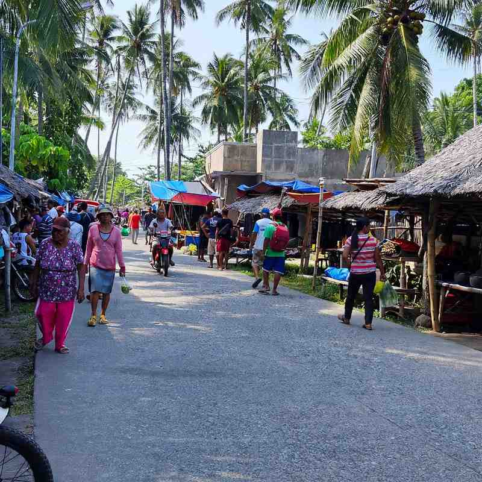

Malatapay Market only comes alive one day a week. Every Wednesday, a strip of road and open ground by the sea in Barangay Maluay, Zamboanguita, about 30 kilometres south of Dumaguete, fills with farmers, fishermen, upland vendors and livestock traders. By the afternoon most of it has packed up again, and for the next six days it is a quiet beach road with a boat landing at the end.
Locals call it the tabo, the market day, and it has run this way for generations. It is not built for visitors, which is exactly why it is worth the trip. You can watch cattle and carabaos change hands under the coconut trees, see neighbours still trading goods without cash, and finish with roast pig or grilled seafood by the water.
Here is what happens on market day, when to arrive, how to get there from Dumaguete and how to pair it with Apo Island.

Malatapay at a Glance
Malatapay Market quick facts
- Where: Barangay Maluay, Zamboanguita, Negros Oriental, by the shore
- When: Wednesdays only, busiest in the early morning; extra market days sometimes run around holidays
- From Dumaguete: about 30 km south, under an hour by bus or jeepney
- Known for: the livestock market, barter trading, lechon and seaside food
- Also: the main boat landing for trips to Apo Island
Where the Name Comes From
Residents say Malatapay takes its name from the tapay palm, Borassus flabellifer, which once grew thickly along this part of the coast. Few are left now, since most of the land was cleared long ago for coconut groves and fields, but the name stuck to the place where people from the hills and the shore have met to trade for as long as anyone remembers.
What Happens on Market Day
The market follows the road from the highway down to the beach, with vendors' tables on both sides. It is easy to wander, but it helps to know the main areas.
- The livestock marketIn a roped-off area under the coconut trees, carabaos, cattle, pigs, goats, horses and fighting cocks are bought and sold. It is loud, dusty and fast. Watch from behind the rope and give the big animals room.
- Barter and tradeCash is the norm now, but some vendors still swap goods among themselves, fish for root crops or rice for other produce, usually early in the day.
- Fish and produceThe day's catch, dried fish, fruit, vegetables and root crops from the upland farms, much of it sold off simple tables or straight from baskets.
- The flea marketClothes, ukay-ukay, kitchenware, rope, knives, brooms and farm tools. For many families in the area, this is the weekly shopping trip.
The early hours are the liveliest. The livestock trading and the best of the fish are usually done by mid-morning, and by midday the heat sends most people home or to lunch.
What to Eat
Seating and tableware can run short at the busiest tables, so regulars sometimes bring their own plates and cups. Eat early if you want the best of the lechon.
How to Get There from Dumaguete
By bus or jeepney, head to the south-bound terminal and take a Ceres bus or jeepney heading for Zamboanguita, Siaton or beyond. Tell the conductor you are getting off at Malatapay. The ride takes roughly 30 to 40 minutes without traffic, and the fare is usually somewhere around ₱25 to ₱50. From the highway it is a short walk down the market road to the shore.
By car or motorbike, drive south along the coastal highway through Bacong and Dauin and watch for the signs to the Malatapay market and dock. The road down from the highway can be muddy after rain, and parking fills up fast on Wednesday mornings, so arrive early.
If you are staying in Dauin, Malatapay is close by. Our guide to where to stay in Dumaguete by area covers Dauin as a beach base.
Combine It with Apo Island
The market's dock is where most small boats leave for Apo Island, so Wednesday makes for a full day: the market first thing, then a boat out to snorkel with the turtles. Boats run on demand rather than on a timetable, and the sea is usually calmer in the morning, so do not linger too long over lunch. The Apo Island snorkelling guide covers boat rates, fees and what to expect on the island.
Tips for a First Visit
Market day
- Check the dayOnly Wednesday counts. On other days there is little more than a quiet road and a few eateries.
- Go earlyAim to arrive between 6 and 8 a.m. for the livestock trading, the best fish and cooler air.
- Bring small billsMost sellers deal in cash and appreciate exact change. Bargain gently; many are farmers selling their own harvest.
- Wear closed shoesThe ground around the livestock area is uneven, dusty and muddy after rain. Add a hat, sunscreen and water.
Is It Worth the Trip?
Malatapay is noisy, crowded in places and smells of animals and fish. There are no souvenir shops, fixed prices or English signs. If that sounds appealing, it is one of the best mornings you can spend in southern Negros. If you are in Dumaguete on a Wednesday, take the early bus south, bring cash and an appetite, and see what a working market looks like.

Comments
No comments yet. Been here recently? Share a tip or ask a question.
Leave a Reply